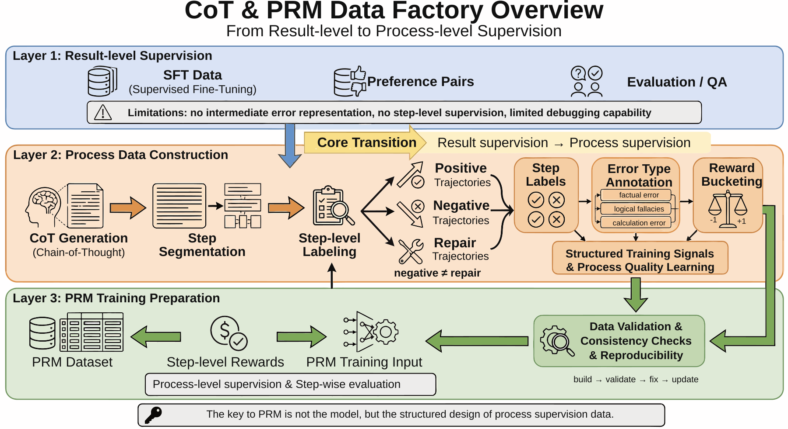
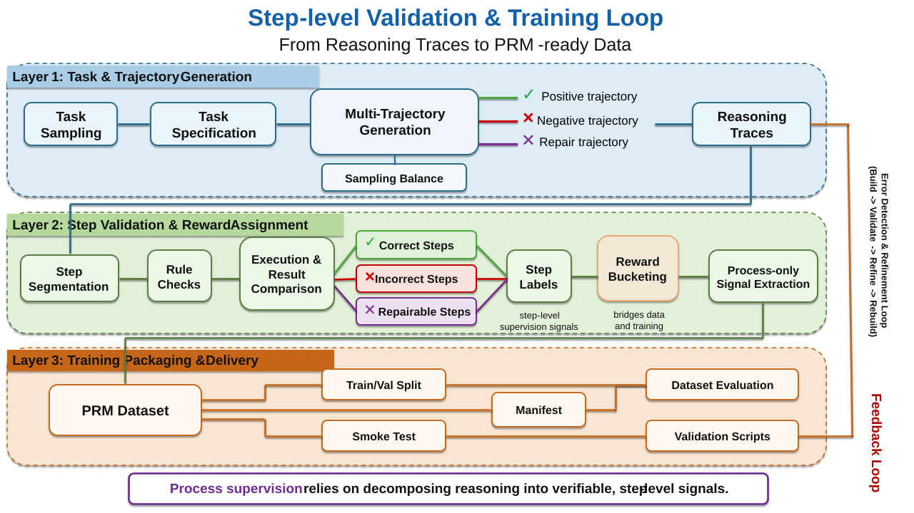
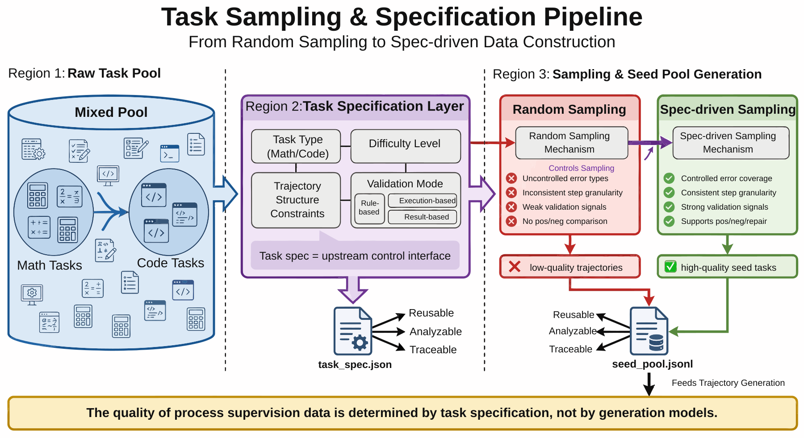
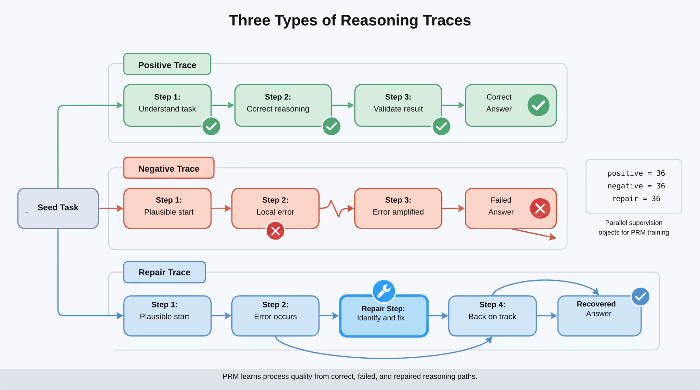
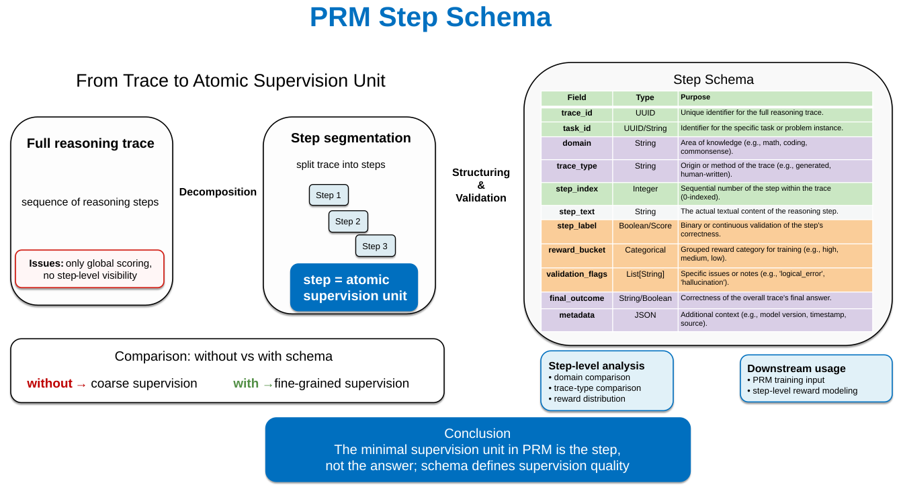
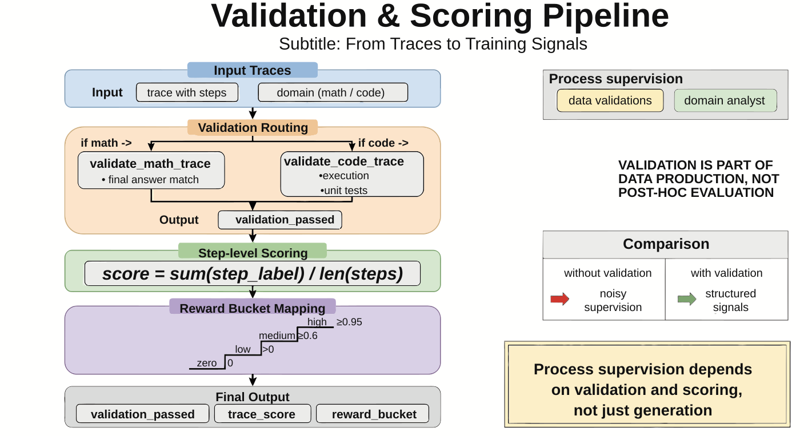
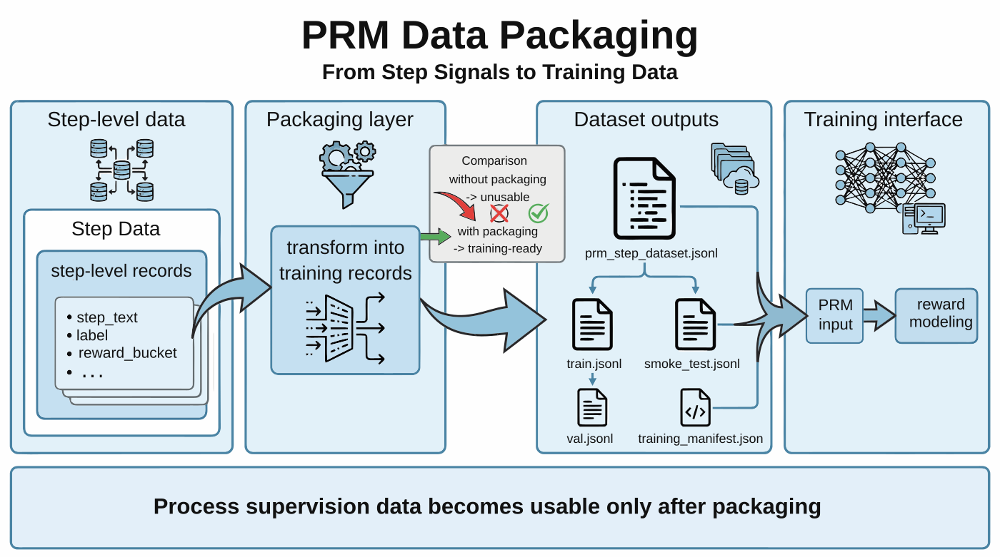
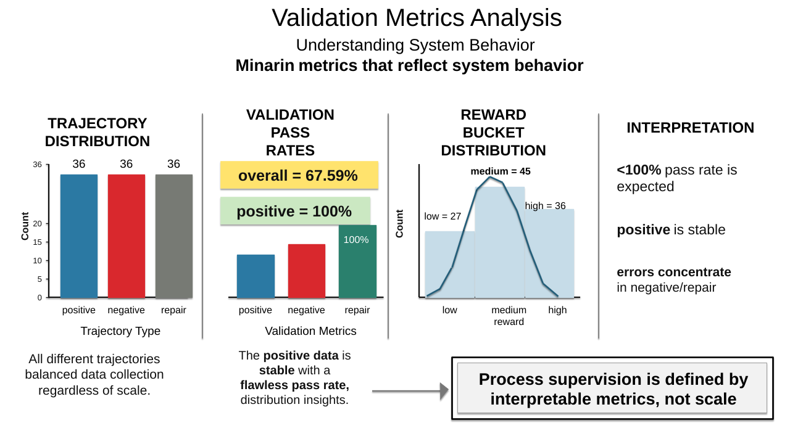
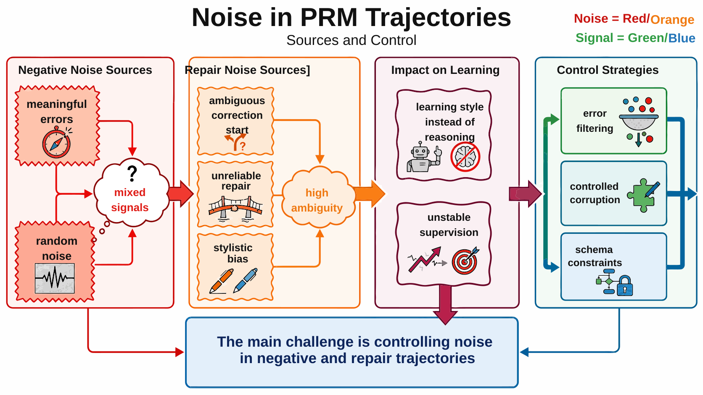

Project 6: Chain-of-Thought Dataset Construction and Process Reward Model Training¶
Abstract¶
P06 focuses on organizing the reasoning process itself into a trainable, verifiable, analyzable, and iterable process-supervision data asset. The chapter's emphasis is not on demonstrating individual chains of thought, but on the engineering integration between step-level supervision, reward assignment, and the process reward model (PRM) training interface.
This chapter can be understood along four main threads:
- Seed tasks and trajectory generation: from task sampling into chain-of-thought (CoT) trajectory construction.
- Step validation and reward assignment: organizing supervision signals around process labels, reward buckets, and trajectory types.
- PRM packaging and training splits: organizing processed results into directly trainable process-supervision data.
- Evaluation and project inspection: validating the data factory's state through metrics, inspection scripts, and noise analysis.
Read in engineering order, this chapter corresponds to a complete pipeline:
Task Sampling → Trajectory Generation → Step Validation → Reward Assignment → PRM Packaging → Training Split → Data Evaluation → Project Inspection
The core objective behind this structure is to extend CoT and PRM data from outcome supervision into a process-supervision pipeline built around step-level signals.
Keywords¶
Chain-of-thought (CoT); process reward model (PRM); process supervision; reasoning trajectory; reward modeling
Project Goals and Reader Takeaways¶
This project uses "CoT Reasoning Dataset and PRM Training" as its central case study, with the goal of constructing process-supervision samples containing positive examples, negative examples, and repair paths for training or evaluating a PRM. CoT trajectory design references the foundational findings of chain-of-thought prompting (Wei et al. 2022), and the acceptance criteria for process supervision and step-level verification reference "Let's Verify Step by Step" (Lightman et al. 2023). Upon completing this chapter, readers should be able to identify the key data objects for this scenario, decompose the engineering pipeline, define acceptance metrics, and transfer the case methodology to related data engineering tasks.
Scenario Constraints and Data Boundaries¶
The focus is on verifiable reasoning tasks and structured step labels, and does not cover all open-domain complex reasoning. These boundaries allow the case to be reproduced and audited; when data scale, data sources, permission scope, or deployment environment change, the sampling strategy, quality thresholds, operating costs, and compliance requirements must be re-evaluated.
Architectural Decisions¶
This project adopts an architectural path of "seed tasks, trajectory generation, step segmentation, automatic validation, label design, and PRM data packaging." This decision prioritizes guaranteeing input/output contracts, version traceability, anomaly localization, and result verifiability, rather than compressing all logic into a one-shot script run.
Sample Schema / Data Flow¶
The core data flow can be summarized as:
Listing P06-1 provides a process or path example illustrating the input/output relationships, structural constraints, or execution patterns discussed in this section.
Reasoning Task → Multi-path CoT Trajectories → Step Segmentation → Validation & Labeling → PRM Training Samples → Evaluation Report
Listing P06-1: Process or path example
This excerpt transforms the above process into a checkable, structured representation.
The sample schema should retain at minimum the fields id, source, content_or_payload, metadata, quality_signals, split_or_stage, and audit_trace; specific fields are further refined by the data types, downstream tasks, and acceptance criteria of this project.
Core Implementation Excerpts¶
The main text retains only the key implementation excerpts that illustrate design trade-offs. Complete scripts, long configuration files, execution logs, and large files should be placed in the companion repository or appendix; code presentation focuses on input/output contracts, quality thresholds, exception handling, and acceptance interfaces.
Experimental or Acceptance Metrics¶
Acceptance metrics include step annotation consistency, validation pass rate, positive-to-negative sample ratio, repair coverage, PRM discriminability, and spot-check error rate. If the project enters production, a curriculum, or a public reproduction environment, version numbers, dependency environments, random seeds, sample spot-check results, and failure sample post-mortem records should also be documented.
Table P06-1 summarizes the corresponding comparison and engineering considerations.
Table P06-1: Process Supervision Data Publication Acceptance Table
| Acceptance Dimension | Metric / Evidence | Publication Review Criteria |
|---|---|---|
| Process Labels | Step annotation consistency, reward bucket distribution, and validation pass rate | Verify that positive, negative, and repair trajectories each have independent evidence upon spot-check |
| Training Interface | PRM sample field completeness rate, training split records, and manifest | Each data batch should be traceable back to task, trajectory, validator, and label source |
| Noise Control | Negative sample contamination rate, ambiguous repair trajectory samples, and manual review conclusions | Do not treat samples not covered by the validator directly as high-quality supervision signals |
Cost, Risk, and Compliance Boundaries¶
Costs arise primarily from multi-path reasoning generation and validation; risks are concentrated in incorrect trajectories being labeled as positive examples, insufficient validator coverage, and process label noise. When external data, personal information, copyrighted content, or third-party services are involved, source descriptions, permission status, desensitization strategies, call records, and manual review records must be retained.
Common Failure Modes¶
Common failures include input distribution drift, missing schema fields, quality thresholds that are too loose or too tight, insufficient evaluation sample coverage, unstable model calls, and non-reproducible results. When investigating, prioritize locating data boundaries and intermediate artifacts before examining the model, toolchain, and deployment environment.
Reproducibility Resource Description¶
Reproduction materials should include data source descriptions, minimal samples, configuration files, run commands, metrics scripts, inspection reports, and artifact directories. The main text retains necessary excerpts; complete notebooks, long scripts, and large files are maintained separately as companion resources.
1. Project Background: The Necessity of a CoT and PRM Data Factory¶
General large language models already possess strong capabilities for open-domain generation tasks, but once they enter scenarios involving mathematical problem-solving, code reasoning, complex planning, or multi-step judgment, problems emerge rapidly.
The most common issue is not that "the model cannot articulate"—it is that "the model can articulate, but cannot stably reason through the correct process."
The first class of problem is correct results with an unusable process. A model may produce the correct answer, but the intermediate reasoning is nothing more than templated elaboration, post-hoc explanation, or even random concatenation. If such trajectories are used directly for supervision, what the model learns is not reasoning ability, but a pattern of generating superficially plausible explanations centered on the correct answer.
The second class of problem is a process that looks reasonable, but whose critical step has already gone wrong. For outcome supervision, samples like these are simply categorized as "wrong answer," but for process supervision, what truly matters is localization: was it a failure of condition identification, formula substitution, code execution, or the repair path itself?
The third class of problem is an uneven error distribution. Positive trajectories tend to be cleaner, while negative and repair trajectories are more prone to noise, annotation ambiguity, and inconsistencies in intermediate states. If the project does not manage these trajectory types separately, signal contamination during PRM training is inevitable.
Therefore, the goal of P06 is not to produce yet another "small SFT dataset with CoT," but to construct a CoT and PRM data factory that organizes seed tasks, trajectory generation, step labels, validation signals, process rewards, and training interfaces into a reusable, inspectable, and extensible production pipeline.
This pipeline does not serve a one-off experiment, but a more universally applicable methodology:
When a team later needs to extend process supervision from mathematics and code to tabular reasoning, tool invocation, Agent planning, or even complex business workflows, what can truly be reused is not any particular chain of thought, but this engineering methodology of "going from tasks to step-level supervision."
2. Project Goals and Boundaries¶
2.1 Project Goals¶
This project focuses on the following four objectives.
Objective One: Establish a transformation pipeline from seed tasks to step-level supervision. That is, the project does not stop at the level of questions and answers, but explicitly generates multi-step reasoning trajectories and further decomposes them into step records suitable for PRM training.
Objective Two: Establish a process data system capable of distinguishing different trajectory types. The project explicitly distinguishes three trajectory types—positive, negative, and repair—so that process supervision no longer consists of only two coarse-grained states ("correct/incorrect"), but can express a data distribution that more closely reflects real reasoning processes.
Objective Three: Establish an automatic validation and reward assignment feedback loop. The difficulty of process supervision lies not in generation but in selection. Through rule-based checks, execution validation, result comparison, and reward buckets, the project converts "trajectory quality" from a subjective judgment into a verifiable signal as much as possible.
Objective Four: Output PRM data assets directly consumable by the training system.
The final deliverable is not just intermediate scripts, but also training-interface artifacts such as prm_step_dataset.jsonl, train.jsonl, val.jsonl, smoke_test.jsonl, and training_manifest.json.
2.2 Project Boundaries¶
To maintain reproducibility, this project explicitly sets several boundaries.
1) Task Scope Boundary¶
The current project covers only mathematics and code reasoning tasks. These two domains are suitable for an initial demonstration of process supervision, because they are relatively amenable to constructing verifiable signals and make it easier to align erroneous steps with final outcomes.
2) Trajectory Type Boundary¶
Current trajectories fall into three categories:
- positive
- negative
- repair
This design is already sufficient to demonstrate the basic form of process supervision, but does not yet cover more complex trajectory relationships such as multi-branch search, tool-call rollback, or mixed planning-execution pipelines.
3) Supervision Granularity Boundary¶
This project emphasizes step-level supervision, but primarily focuses on rule-based validation + heuristic scoring + data packaging, rather than fully deploying a large-scale PRM model training platform. In other words, it more closely resembles a prototype process-supervision data factory than a final-state system.
4) Scale Boundary¶
The current seed tasks number 36, with 108 generated trajectories and 534 total steps. The scale is manageable and better suited for methodology demonstration and structural analysis than for large-scale industrial training. The existing data is sufficient to illustrate the process, metrics, and noise issues, but should not be overstated as "already covering a broad range of reasoning scenarios."
2.3 The Role of Boundary Setting¶
The most common misjudgment in process supervision projects is to see CoT, step labels, and reward signals and conclude that a mature PRM data system has already been built. In reality, a credible data factory is not built from terminology—it is built through boundary management.
For P06, the value of clearly stated boundaries lies in:
- Keeping the task domain on which current conclusions depend transparent;
- Preventing small-scale validation results from being misread as universal conclusions;
- Helping to clarify priorities for subsequent extensions rather than blindly scaling up;
- Making the project resemble a sustainable, iterable engineering capability rather than a conceptual demonstration.
3. Project Positioning: P06's Place in the Capability Chain¶
If the book as a whole is viewed as a large-language-model data engineering capability chain, P06 occupies a central position in the segment moving from "outcome supervision toward process supervision."
Earlier chapters have already discussed SFT data, preference pairs, evaluation, and QA in general. But once teams enter reasoning scenarios, they quickly discover:
- Pure outcome labels cannot express intermediate errors;
- Pure preference comparisons are insufficient to pinpoint step-level signals;
- Pure "chain-of-thought demonstration" does not equate to trainable process supervision;
- Data validation before training is more determinative of the final performance ceiling than training itself.
Therefore, the value of this chapter lies not in reintroducing the concept of PRM, but in grounding these methods in a concrete, executable engineering project: CoT reasoning dataset construction and PRM training preparation.
In other words, this chapter does not answer "what is a PRM," but rather addresses more specific questions:
- How should process supervision data be organized?
- Why must step labels be designed before PRM training?
- Why can negative and repair trajectories not be merged into a single class of "bad samples"?
- Why is the reward bucket not a finishing touch, but an important bridge to the downstream training interface?
- Under limited resources, how does one first build a runnable, verifiable, and extensible PRM data feedback loop?
In this sense, the most important contribution of this chapter is not "training one more model," but answering a larger question:
When a team wants the model to learn a better process rather than merely a better result, how should data engineering be redesigned?
Figure P06-1 illustrates the corresponding workflow or structure.

{kind=link}
4. Overall Architecture: A Process Supervision Pipeline from Seed Tasks to PRM Training Assets¶
From an engineering perspective, this project can be decomposed into three layers.
4.1 Layer One: Task and Trajectory Generation¶
This layer addresses "how to reliably obtain reasoning trajectories amenable to analysis." It primarily includes:
- Task sampling
- Specification definition
- Multi-trajectory generation
- Trajectory type control
- Positive/negative/repair sample ratio management
The goal of this layer is not to immediately produce a training set, but to expand raw tasks into a set of reasoning traces that are comparable, analyzable, and verifiable.
4.2 Layer Two: Step Validation and Reward Assignment¶
This layer addresses "whether these processes are worth learning." It primarily includes:
- Step segmentation
- Rule-based checking
- Result execution and comparison
- Step label generation
- Reward bucket assignment
- Process-only signal extraction
This is the most critical part of the entire project, because it determines whether the system learns to "write chains of thought" or to "accumulate reliable process signals."
4.3 Layer Three: Training Packaging and Delivery¶
This layer addresses "whether these process data can be directly consumed by training and evaluation systems." It primarily includes:
- PRM step data packaging
- Train/val splitting
- Smoke test construction
- Manifest generation
- Dataset evaluation
- Project inspection scripts
Only at this stage does the project transition from "having generated some reasoning traces" to "having established a process-supervision data pipeline."
Figure P06-2 illustrates the corresponding workflow or structure.

{kind=link}
5. Seed Tasks: The Task Layer as the Supervision Starting Point¶
When many people discuss PRM, they focus entirely on the reward or scoring model, overlooking the design of the upstream task layer.
Yet in real-world engineering, the ceiling of PRM training is largely determined by: what tasks, what difficulty levels, and what types of processes the system first encounters.
5.1 Why Seed Tasks Are Necessary¶
Without a clearly defined task pool, a project easily degrades into "randomly generating some reasoning traces"—which may look voluminous but has chaotic distribution and uneven difficulty, with no way to explain why these steps merit supervision.
Once the task layer is made explicit, the project can:
- Constrain the source and specification of problems;
- Maintain a basic balance across different task domains;
- Trace which seed a given trajectory originates from;
- After training, audit whether problems stem from the task, the trajectory, or the validation stage.
5.2 Why the Current Project Starts with Mathematics and Code¶
Mathematics and code are two excellent starting points for process supervision.
On one hand, both have relatively clear correctness standards, making result comparison and automatic validation more tractable. On the other hand, both possess sufficiently strong multi-step reasoning characteristics to genuinely expose step-level errors, rather than reducing to simple correct/incorrect classification.
5.3 Why Seed Tasks Are Not the Same as Final Training Samples¶
Seed tasks are merely one layer of "supervision source," not the final unit of supervision. The real value of P06 lies in expanding seed tasks into multiple trajectory types, decomposing trajectories into steps, and only then exporting PRM data. This pipeline means:
The project's concern is not the problem itself, but the process signals generated around that problem.
6. Task Sampling and Specification Design: The Upstream Scheduling Layer¶
sampler.py is responsible at this layer for constructing two types of seeds from GSM8K, MATH, and MBPP: math tasks extract the final answer and split it into reference steps, while code tasks retain reference_code, test_setup_code, and test_list, with everything unified into seed_pool.jsonl and task_spec.json. The MATH dataset's problem structure provides a canonical source for multi-step reasoning and process verification (Hendrycks et al. 2021). This prepares the fields required for downstream trace generation and validation at the upstream stage.
The corresponding implementation is as follows:
Listing P06-2 provides a Python implementation excerpt illustrating the input/output relationships, structural constraints, or execution patterns discussed in this section.
for index, record in enumerate(gsm8k):
final_answer = extract_final_answer(record["answer"])
steps = split_reasoning_steps(record["answer"])
if not final_answer or len(steps) < 2:
continue
seeds.append(
{
"seed_id": f"math_{index}",
"domain": "math",
"topic": infer_math_topic(record["question"]),
"question": record["question"],
"reference_steps": steps,
"final_answer": final_answer,
"source_dataset": "gsm8k_train",
}
)
Listing P06-2: Python implementation excerpt
This excerpt transforms the above process into a checkable, structured representation.
task_spec encodes project constraints as structured configuration:
Listing P06-3 provides a Python implementation excerpt illustrating the input/output relationships, structural constraints, or execution patterns discussed in this section.
task_spec = {
"seed_count": len(seeds),
"domain_distribution": dict(Counter(seed["domain"] for seed in seeds)),
"trace_targets": {
"positive": "correct reasoning trace",
"negative": "corrupted or wrong reasoning trace",
"repair": "wrong step followed by correction",
},
"validation_targets": [
"final_answer_match",
"step_level_quality_labels",
"code_execution_and_unit_tests",
],
}
Listing P06-3: Python implementation excerpt
This excerpt transforms the above process into a checkable, structured representation.
The first step in the project pipeline is src/sampler.py: sample tasks and generate specifications, then proceed to reasoning trajectory generation. P06 treats "data distribution" as an engineering object that must be explicitly managed from the very beginning, rather than leaving it to model randomness.
6.1 What Problem Specification Design Solves¶
A task spec is essentially answering several questions:
- Does the current task belong to mathematics or code?
- In what difficulty range does the problem roughly fall?
- Does trajectory generation require a particular structure?
- Does subsequent validation rely primarily on rules, execution, or result comparison?
By surfacing these questions at the specification layer, the project's downstream generation, validation, and analysis all operate within a consistent boundary.
6.2 Why Sampling Cannot Simply Mean "Diversity"¶
Many projects claim to have done sampling when in fact they only randomly selected problems. But for PRM, random does not equal appropriate, because process supervision cares less about surface-level problem diversity and more about:
- Whether the error types are sufficiently varied;
- Whether step granularity is amenable to segmentation;
- Whether validation signals are obtainable;
- Whether there is a comparative basis for positive, negative, and repair trajectories.
6.3 The Engineering Value of task spec¶
The current project explicitly produces seed_pool.jsonl and task_spec.json, which means the task definitions are not buried inside code but are persisted as upstream scheduling information. The advantage of this approach is:
- Subsequent iterations can compare the effect of different specifications on trajectory quality;
- Post-mortems can trace which task types more easily introduce noise;
- The task layer and trajectory layer can be iterated separately without rewriting the entire pipeline each time;
- Interfaces are preserved for future extension to new task domains.
Figure P06-3 illustrates the corresponding workflow or structure.

{kind=link}
7. Trajectory Generation: Parallel Construction of Positive, Negative, and Repair Trajectories¶
The three trajectory types in P06 are explicitly constructed in generate_traces.py: positive trajectories use the reference steps directly; negative trajectories introduce errors by corrupting key numbers or mutating reference code; repair trajectories append a correction step after an erroneous trajectory. This implementation grounds "process supervision" in operable data synthesis logic.
The corresponding implementation is as follows:
Listing P06-4 provides a Python implementation excerpt illustrating the input/output relationships, structural constraints, or execution patterns discussed in this section.
wrong_steps = [dict(step) for step in correct_steps]
wrong_steps[-1]["text"] = corrupt_numeric_text(wrong_steps[-1]["text"])
wrong_steps[-1]["label"] = 0
negative_final = {
"step_idx": len(wrong_steps) + 1,
"text": f"Final answer: {corrupt_numeric_text(seed['final_answer'])}",
"label": 0,
"kind": "final",
}
repair_steps = wrong_steps + [negative_final]
repair_steps.append(
{
"step_idx": len(repair_steps) + 1,
"text": f"Correction: the previous arithmetic was wrong. The correct final answer is {seed['final_answer']}.",
"label": 1,
"kind": "repair",
}
)
Listing P06-4: Python implementation excerpt
This excerpt transforms the above process into a checkable, structured representation.
This implementation shows that a repair trace is not a separately constructed new problem, but is formed by explicitly appending a repair step after a negative trace. The logic for code tasks is analogous, except that errors originate from mutate_python_code and validation relies on subsequent unit test execution.
One of P06's core pipeline steps is src/generate_traces.py—generating multiple reasoning trajectories from seed tasks, rather than retaining only a single canonical answer trajectory.
7.1 Why Generating Only Positive Trajectories Is Insufficient¶
If process supervision retains only positive trajectories, the model can certainly learn "what a correct-looking process looks like," but still cannot effectively distinguish:
- Which local steps are unreliable;
- Which repair strategies are effective;
- Which errors are amplified in subsequent steps.
This causes PRM to easily degrade into a scorer that "prefers lengthy, well-formatted trajectories" rather than a model capable of identifying process quality.
7.2 What Problem Negative Trajectories Solve¶
The value of negative trajectories is that they provide an explicit reference frame for "erroneous processes." Through them, the system can learn:
- How intermediate steps deviate from the correct path;
- What warning signs appear before ultimate failure;
- Which errors are merely local deviations versus which cause complete pipeline collapse.
7.3 Why Repair Trajectories Are Both More Important and More Dangerous¶
Repair trajectories more closely resemble real-world reasoning correction processes than ordinary negative examples. They help the system learn:
- How to return to the correct path after an error occurs;
- Which types of remediation are effective;
- What context a repair process should preserve.
However, repair trajectories are also the most prone to introducing noise. If the repair logic itself is unstable, what the model may learn is not "how to correct errors," but "how to reorganize errors into a continuation that appears superficially plausible."
7.4 What the Current Project's Trajectory Structure Indicates¶
Existing metrics show that the project generated 108 trajectories, with the three types perfectly symmetric: positive=36, negative=36, repair=36. This demonstrates that the project's trajectory structure is not the result of generating some samples ad hoc, but of explicitly designing all three process types as parallel supervision objects.
Figure P06-4 illustrates the corresponding workflow or structure.

{kind=link}
8. Step Segmentation and Schema: The Minimal Unit of Process Supervision¶
After trajectory generation is complete, the project does not directly use entire reasoning traces for training. Instead, it first performs step-level segmentation. This step is one of the most fundamental distinctions between P06 and an ordinary CoT sample library.
8.1 Why the Step Is a Necessary Unit¶
An entire trajectory can only express "whether it is good overall," but cannot express "which specific step is good and which is bad."
Yet what a PRM seeks to learn is precisely this finer-grained judgment:
- Whether a given step is logically coherent;
- Whether a given step is consistent with the preceding one;
- Whether a given step introduces an erroneous fact or erroneous code;
- Whether a given step, even without directly causing final failure, has already emitted a danger signal.
8.2 What Problem the Schema Solves Here¶
A step schema is not designed to make fields more complete; it is designed to allow validation, statistics, and training to all operate around the same unit. A typical step record should contain at minimum:
trace_idtask_iddomaintrace_typestep_indexstep_textstep_labelreward_bucketvalidation_flagsfinal_outcomemetadata
With this schema layer in place, the project can subsequently:
- Analyze step quality differences across domains;
- Compare noise structures across trajectory types;
- Trace which step distributions a given reward bucket originates from;
- Package step data directly as PRM training inputs.
8.3 Why the Step Schema Must Be Preserved Separately¶
Many process supervision projects fail not because the model is too weak, but because the minimal supervision unit was never clearly designed at the outset, leading to:
- Training that can only score entire responses;
- No way to trace errors back to specific steps when they occur;
- Data splits handled only at the coarse sample level;
- No handle for noise analysis.
From this perspective, the step schema is not an ancillary design element—it is the foundation of the PRM data factory.
Figure P06-5 illustrates the corresponding workflow or structure.

{kind=link}
9. Automatic Validation: Result Verification for Process Supervision¶
validate_and_score.py is responsible at this layer for chaining together domain routing, result validation, trace_score computation, and reward bucket mapping: math tasks go through final answer matching, and code tasks go through code execution and unit tests. This grounds automatic validation in a complete engineering feedback loop.
The corresponding implementation is as follows:
Listing P06-5 provides a Python implementation excerpt illustrating the input/output relationships, structural constraints, or execution patterns discussed in this section.
if trace["domain"] == "math":
passed, validation = validate_math_trace(trace)
else:
passed, validation = validate_code_trace(trace)
label_sum = sum(step["label"] for step in trace["steps"])
score = label_sum / max(1, len(trace["steps"]))
bucket = reward_bucket(score)
enriched["validation_passed"] = passed
enriched["trace_score"] = round(score, 4)
enriched["reward_bucket"] = bucket
Listing P06-5: Python implementation excerpt
This excerpt transforms the above process into a checkable, structured representation.
The reward bucket is also not a black-box score, but a rule-interpretable piecewise function:
Listing P06-6 provides a Python implementation excerpt illustrating the input/output relationships, structural constraints, or execution patterns discussed in this section.
def reward_bucket(score: float) -> str:
if score >= 0.95:
return "high"
if score >= 0.6:
return "medium"
if score > 0:
return "low"
return "zero"
Listing P06-6: Python implementation excerpt
This excerpt transforms the above process into a checkable, structured representation.
Writing it this way makes the signals on which validation depends, the origin of buckets, and the relationships among them all transparent.
One of P06's central intermediate steps is src/validate_and_score.py, which validates, scores, and assigns labels to the generated trajectories. This step is critically important because it determines whether the project is accumulating supervision signals or amplifying generation noise.
9.1 Why Validation Must Be Moved Upstream Into the Data Production Stage¶
Many teams treat validation as post-training evaluation, but process supervision does not work that way. Once dirty trajectories enter PRM data, the trained model will likely become better at recognizing "pseudo-reasoning patterns" rather than better at recognizing genuine process quality.
Therefore, validation here is not the project's epilogue—it is part of the production pipeline.
9.2 What Signals Automatic Validation Can Rely On¶
Based on the existing process description, the project combines rule-based checking, execution, and result comparison to assign labels and rewards to trajectories and steps. This indicates that current validation does not remain at the text surface, but integrates formal correctness, executability, and result consistency as much as possible.
For math tasks, this kind of validation more readily relies on result comparison; for code tasks, it is more appropriate to combine execution results, test cases, and syntax/behavioral checks. This design ensures that "step quality" is no longer only a subjective description.
9.3 Why Stricter Validation Is Not Always Better¶
Intuitively, many people feel that tightening the rules will produce cleaner data. But in process supervision projects, overly strict validation also creates problems:
- Valuable intermediate errors are over-removed;
- Repair trajectories lose their raison d'être;
- Data distribution becomes dominated by positive examples, making it harder for the PRM to learn correction boundaries;
- The project devolves into a variant of outcome-only supervision.
Therefore, a more appropriate strategy is not "blanket cleaning," but preserving structured differences: which steps pass, which fail, and which, despite failing, are still worth retaining as process signals.
9.4 What the Current Project's Validation Results Indicate¶
Existing metrics show that the overall trajectory validation pass rate is 67.59%, but the positive trajectory pass rate reaches 100.00%, indicating that current issues are concentrated in the control of negative and repair trajectories. This result is highly valuable because it clearly identifies that the next optimization step should not be to blindly scale up, but to prioritize improving cleaning and validation quality.
Figure P06-6 illustrates the corresponding workflow or structure.

{kind=link}
10. Step Label Design: Operationalizing Process Fields¶
When many people discuss process supervision, they use abstract concepts such as "high-quality chain of thought," "trustworthy steps," and "process consistency." But what can actually be implemented in engineering is not these abstract terms—it is data labels that can enter fields, statistics, and training.
10.1 The Role of Step Labels¶
The value of step labels lies in decomposing "process quality" into machine-consumable supervision signals. Through labels, the project can explicitly specify:
- Which steps should be reinforced;
- Which steps should be penalized;
- Which steps are process-exclusive signals rather than accessories to an outcome;
- Which steps, even within a negative trajectory, still carry local value.
10.2 Why Labels Cannot Be Binary Only¶
Simple positive/negative binary classification is certainly attractive for its ease of implementation and straightforward training. But for PRM, this is often too coarse. The reason is:
- A repair trajectory may have errors in its first half and corrections in its second;
- A negative trajectory may have only one critical error;
- Some steps, while not optimal, should not be equated with pure noise.
Therefore, P06's introduction of a joint structure of step labels and reward buckets is essentially an attempt to avoid crudely compressing all complexity into a single label bit.
10.3 Why Process-Only Supervision Signals Matter¶
Existing metrics show that the project contains 144 process-only supervision signal steps. The engineering significance of this number is clear: process supervision genuinely provides additional signals that outcome-only supervision cannot replace. If only final results are examined, the value of these 144 steps is completely discarded.
This is precisely why a PRM data factory is not simply "breaking answers into pieces," but building a new supervision layer beyond outcomes.
Figure P06-7 illustrates the corresponding workflow or structure.
 Figure P06-7: Step Labels and Process-Only Signal Schematic
Figure P06-7: Step Labels and Process-Only Signal Schematic
11. Reward Buckets: A Stratified Scoring Mechanism¶
When many teams work on process scoring, they tend to simplify the entire problem into "giving a trajectory a single score." This approach can quickly validate ideas, but it also quickly runs into problems: scores are too sparse, boundaries are too subjective, and the training interface becomes unstable.
11.1 The Engineering Significance of Reward Buckets¶
The value of reward buckets lies not in being more "advanced" than continuous scores, but in being better suited to expressing interpretable intervals in the early stages of engineering. Through buckets, teams can more clearly distinguish:
- High-quality processes that clearly merit reinforcement;
- Intermediate processes with some value but insufficient stability;
- Low-quality processes that should be down-weighted or excluded.
11.2 Why Buckets Are More Stable Than Continuous Scores¶
In small-scale process supervision projects, continuous scores often produce two problems:
- Scoring criteria are difficult to keep stable;
- It is subsequently hard to explain what the difference between 0.73 and 0.78 actually derives from.
By contrast, buckets make it easier for the project to achieve in its early stages:
- Clear rule definitions;
- Direct distribution statistics;
- Simple training mapping;
- Easier anomaly localization during post-mortems.
11.3 What the Current Project's Bucket Structure Indicates¶
The existing reward bucket distribution is: high=36, medium=45, low=27. This distribution indicates at least two things:
First, the project has not made all trajectories "uniformly mediocre," but has formed distinguishable quality tiers.
Second, the current data skews toward medium-to-high quality processes, while still retaining enough low-quality samples to provide contrastive learning foundations for the PRM.
12. PRM Data Packaging: The Training Interface Layer¶
This section emphasizes the actual structure of the step-level dataset. P06 does not simply copy entire traces into the training directory; instead, it reorganizes each step into PRM training records and then generates train.jsonl, val.jsonl, smoke_test.jsonl, and training_manifest.json. This demonstrates that the minimal unit consumed by the training system is not a problem, but a step record carrying labels and reward signals.
The corresponding packaging structure is as follows:
Listing P06-7 provides a Python implementation excerpt illustrating the input/output relationships, structural constraints, or execution patterns discussed in this section.
record = {
"record_id": f"{trace_id}_step_{step_idx}",
"domain": domain,
"trace_type": trace_type,
"prompt": question,
"step_text": step_text,
"label": step_label,
"reward_bucket": reward_bucket,
}
Listing P06-7: Python implementation excerpt
This excerpt transforms the above process into a checkable, structured representation.
With this excerpt, the main text reads more like an engineering implementation than a results summary.
After trajectory generation, step segmentation, validation, and reward assignment are complete, the project must also complete a frequently overlooked step: re-packaging these intermediate signals into a data format directly consumable by the training system.
In P06's pipeline, this step is handled by src/prepare_prm_data.py. Its significance is that what the project ultimately builds is not a collection of scattered intermediate files, but a truly trainable data asset.
12.1 Why the Packaging Layer Matters¶
Without a packaging layer, the project encounters a common disconnect:
- The research side believes "step labels already exist";
- The training side believes "these files cannot be used directly";
- The evaluation side cannot confirm the train/val split logic.
The role of the packaging layer is to reorganize the complex process supervision signals from preceding stages into standard assets that can enter training and evaluation systems.
12.2 What Key Training Artifacts the Current Project Produces¶
Existing reports show that the project explicitly produces:
data/training/prm_step_dataset.jsonldata/training/train.jsonldata/training/val.jsonldata/training/smoke_test.jsonldata/training/training_manifest.json
This demonstrates that the project has not stalled at the "trajectory analysis" stage but has completed training interface layer delivery.
12.3 Why Smoke Tests and Manifests Must Also Exist¶
Many data projects focus attention on train/val while neglecting smoke tests and manifests. In practice, both are important.
smoke_test.jsonlshows that the project has considered rapid pre-training validation;training_manifest.jsonshows that the project has considered data versioning, scale, splitting, and metadata management.
These artifacts do not directly improve model scores, but significantly improve project maintainability and reproducibility.
Figure P06-8 illustrates the corresponding workflow or structure.

{kind=link}
13. Data Scale and Structure: Signals That the Current Factory Has Taken Shape¶
In project reviews, reviewers easily ask first "how many data records were produced." But for PRM, scale is important, but structure is more important.
The key figures for the current project are as follows:
- Seed tasks:
36 - Trajectories:
108 - Total steps:
534 - Process-only supervision signal steps:
144 - Step-level records in training set:
534 - Total estimated tokens:
58,381
13.1 What These Numbers Indicate¶
First, the project has formed a complete "task → trajectory → steps → training data" expansion pipeline, rather than an isolated collection of CoT samples.
Second, the step count is significantly higher than the task count, indicating that the supervision unit has successfully descended to the process layer rather than remaining at the problem level.
Third, the 144 process-only signal steps show that the project has genuinely introduced new signals beyond outcomes, rather than merely rearranging answer text.
13.2 Why Structure Matters More Than Total Volume¶
If a PRM dataset has many steps but lacks:
- Trajectory type differentiation;
- Reward stratification;
- A validation feedback loop;
- Clear splits;
then its value remains limited.
What is most worth preserving about P06 is precisely that these structural designs are already in place. The scale is small, but the feedback loop is relatively complete. The most critical point here is: process supervision scales not by piling up volume, but by building structure first.
14. Interpreting Metrics: The Meaning of Current Validation Results¶
Many case studies, when reporting results, prefer to report a single aggregate number such as "generated over 100 trajectories." But what is genuinely more valuable are the metrics that help understand system behavior.
14.1 Current Key Metrics¶
The most critical results from the existing project include:
- Overall validation pass rate:
67.59% - Positive trajectory pass rate:
100.00% - Symmetric trajectory counts across three types:
36 / 36 / 36 - Reward bucket distribution:
36 / 45 / 27
Viewed together, these metrics are far more informative than reporting a single "number of trajectories."
14.2 Why a Sub-100% Pass Rate Is Actually a Good Sign¶
Many projects treat "all passing" as success. But for process supervision, if all trajectories are validated as high-quality, that is more often a cause for concern—because it may mean:
- Only positive examples were retained;
- Validation rules are too permissive;
- Noise was ignored;
- The PRM cannot learn true boundaries.
P06's overall pass rate of 67.59%, while not high, genuinely exposes the noise challenges in negative and repair trajectories. This engineering state of "surfacing problems" is often more valuable than pretending everything is perfect.
14.3 Why the 100% Positive Pass Rate Also Has a Dual Meaning¶
A positive trajectory pass rate of 100.00% certainly indicates good quality in positive sample generation, but it also points to something else: the project's primary pressure is no longer on positive examples, but on cleaning and controlling erroneous and repair trajectories.
This indicates that the next optimization direction is already clear, rather than the project being in a chaotic state where "problems could be anywhere."
Figure P06-9 illustrates the corresponding workflow or structure.

{kind=link}
15. Evaluation and Project Inspection: The Self-Checking Layer¶
run_p6_checks.py encodes a set of concrete engineering gates as automatic checks: first running py_compile and evaluate_prm.py, then checking whether required files exist, whether both the math and code domains are present, whether all three trajectory types (positive/negative/repair) are covered, whether step labels cover both positive and negative classes, whether all reward buckets are present, and whether train and val overlap.
The corresponding implementation is as follows:
Listing P06-8 provides a Python implementation excerpt illustrating the input/output relationships, structural constraints, or execution patterns discussed in this section.
dataset_checks = [
{
"name": "required_files_exist",
"passed": all(path.exists() for path in REQUIRED_FILES),
},
{
"name": "both_domains_present",
"passed": {"math", "code"} <= {trace["domain"] for trace in traces},
},
{
"name": "trace_types_present",
"passed": {"positive", "negative", "repair"} <= {trace["trace_type"] for trace in traces},
},
{
"name": "train_val_no_overlap",
"passed": not ({record["record_id"] for record in train} & {record["record_id"] for record in val}),
},
]
Listing P06-8: Python implementation excerpt
This excerpt transforms the above process into a checkable, structured representation.
These checks operationalize "project inspection" as executable engineering constraints.
In P06's pipeline, in addition to evaluate_prm.py, there is also run_p6_checks.py. This shows that the project is concerned not only with whether data can be generated, but also with whether the code, artifacts, and reports are mutually consistent.
15.1 Why Evaluation Cannot Only Examine Post-Training Model Performance¶
What a project chapter most needs to demonstrate is "engineering closure," not a final model score. Because in many real-world teams, what fails first is not the PRM model itself, but:
- A critical artifact was not generated;
- Train and val overlap;
- Some step label class was never covered at all;
- A reward bucket is missing;
- The code and the report describe different versions of the data.
15.2 What the Current Project's Inspection Coverage Indicates¶
Existing inspection results show:
- Total checks:
10 - Checks passed:
10 - Overall status:
PASS - Command-level checks:
py_compile, evaluate_prm - Data-level checks:
required_files_exist, both_domains_present, trace_types_present, step_labels_cover_both_classes, reward_buckets_present, train_val_no_overlap ...
This demonstrates that the current project's checks are not perfunctory, but genuinely cover critical aspects including code runnability, file existence, data distribution, and training splits.
15.3 Why Inspection Scripts Deserve a Place in the Chapter Body¶
A PRM project without an inspection layer can easily appear normal during a demonstration but completely fall apart during reproduction. Including inspection scripts in the chapter body is fundamentally an emphasis on:
The credibility of a process supervision project comes not only from the samples themselves, but also from whether the project can demonstrate the absence of obvious engineering errors.
16. Noise Control: Governing Negative and Repair Trajectories¶
The aspect of P06 most worthy of deeper discussion is not how elegantly the positive trajectories were produced, but why negative and repair trajectories become the primary bottleneck.
16.1 Why Negative Trajectories Are Inherently Noisier¶
The problem with negative trajectories is that they often mix two entirely different components:
- "Genuine error paths" with research value;
- "Random garbled noise" with no supervisory value.
If the project does not distinguish between the two, the PRM may well learn "how to penalize strangely styled text" rather than "how to identify genuinely erroneous reasoning steps."
16.2 Why Repair Trajectories Are More Prone to Ambiguity¶
Repair trajectories look ideal in theory, because they simulate a model's process of recovering from an error. But the genuinely hard questions are:
- From which step does the repair begin;
- Whether the preceding erroneous steps are retained;
- Whether the correct steps following the repair should be down-weighted;
- Whether repair trajectories will produce stylistic biases.
If these questions are not clearly addressed at the schema and validation layers, repair data quickly becomes the most unstable class of asset.
16.3 The Clear Signal the Current Project Provides¶
Existing reports clearly indicate that the shortfall in overall pass rate is concentrated in negative and repair trajectories, and that subsequent optimization should prioritize trace validation and repair trajectory quality control rather than blindly expanding scale.
This is a very important engineering conclusion, because it narrows "what to do next" from vague generality into a specific, well-defined production pipeline problem.
Figure P06-10 illustrates the corresponding workflow or structure.

{kind=link}
17. Cost and Benefit: The Priority of Structural Closure¶
In many teams, the mention of process supervision immediately conjures associations with longer CoT, more complex annotation, and higher training costs. This judgment is not entirely wrong, but it can be misleading:
What is truly expensive is never "a few more steps"—it is blindly scaling up before a validation feedback loop exists.
17.1 The Real Benefits of a Small-Scale Project¶
For a small-scale process supervision project like P06, the greatest value lies not in immediately producing a strong PRM, but in first solidifying the following:
- Whether steps can be segmented;
- Whether labels are stable;
- Whether rewards are interpretable;
- Whether train/val is controllable;
- Whether noise can be localized.
Once these foundational questions remain unresolved, the larger the scale, the faster low-quality data expands.
17.2 Why This Chapter Emphasizes "Structural Benefit"¶
P06's current scale is not large, but it already possesses several key characteristics:
- A complete staged pipeline;
- Real metrics;
- Clear bottlenecks;
- Training interface artifacts;
- An inspection and evaluation feedback loop.
This means its primary value lies in "explaining process supervision engineering in a grounded way," not in "using massive data to prove PRM is necessarily effective."
17.3 A More Realistic Engineering Judgment¶
For most teams, a first-version PRM project is better suited to following this principle:
First make process signals into trustworthy assets, then discuss how to scale those assets up.
18. Primary Deliverables: Artifact Inventory¶
A project chapter should not only describe "what was done," but also "what was left behind."
Based on existing reports, P06 has formed a relatively complete deliverable system:
18.1 Intermediate Data Artifacts¶
data/processed/seed_pool.jsonldata/processed/task_spec.jsondata/processed/cot_traces.jsonldata/processed/trace_summary.jsondata/processed/validated_traces.jsonldata/processed/step_rewards.jsonldata/processed/validation_summary.json
18.2 Training Data Artifacts¶
data/training/prm_step_dataset.jsonldata/training/train.jsonldata/training/val.jsonldata/training/smoke_test.jsonldata/training/training_manifest.json
18.3 Report and Inspection Artifacts¶
data/reports/p6_report.mddata/reports/p6_metrics.jsondata/reports/p6_test_results.jsondata/reports/p6_test_report.md
This artifact structure demonstrates that the project is no longer merely a notebook demonstration, but a relatively complete data engineering output.
19. Limitations and Risks: Current Process Supervision Constraints¶
The most common mistake in engineering case studies is to discuss only one's own structure and results without addressing vulnerabilities.
But for PRM projects, limitations should not be omitted—they should be explicitly stated in a later section of the main text.
19.1 The Current Project's Primary Limitations¶
Based on existing reports, P06's primary limitations include at minimum:
- The overall validation pass rate is still only
67.59%; - Negative and repair trajectories are more prone to introducing noise and annotation ambiguity;
- The current scope covers only two types of reasoning tasks: mathematics and code;
- The data scale is not yet appropriate for direct use as a large-scale PRM training corpus.
These limitations do not diminish the project's value—on the contrary, they make the chapter more credible, because they demonstrate that the project is surfacing problems rather than avoiding them.
19.2 Why "Scale First" May Actually Be the Wrong Direction¶
Existing reports clearly indicate that if scaling continues without first improving cleaning and validation, PRM data will become dirtier before it becomes stronger. This judgment is critically important because it restores the engineering priorities to the correct order:
- First improve trace quality;
- Then improve reward trustworthiness;
- Finally expand task coverage and data scale.
19.3 Why These Risk Judgments Must Be Preserved¶
Because the case studies that teams actually reuse are generally not those that "claim everything is finished," but those that "clearly explain what should be done next."
20. Future Extensions: Toward More Complex Process Supervision Systems¶
P06 has already established an excellent starting point, but its greater value lies in preserving a clear path for subsequent extension.
20.1 Extension Direction One: Expand the Task Range¶
Existing recommendations already indicate that the task range can be further extended to:
- Tabular reasoning
- Scientific reasoning
- Planning reasoning
These task types share the characteristic that processes are more complex and validation is more difficult, which makes the necessity of step-level supervision even more apparent.
20.2 Extension Direction Two: Refine Reward Definitions¶
The current reward buckets already establish a basic tier structure, but can be further refined in the future:
- Distinguish local correctness from global correctness;
- Distinguish formal errors from logical errors;
- Distinguish recoverable errors from unrecoverable errors.
This allows process signals to become better suited to downstream PRM or mixed training paradigms.
20.3 Extension Direction Three: Transfer to Complex Agent Tasks¶
From a methodological standpoint, P06 already has transfer potential. Because many Agent tasks are fundamentally multi-step processes:
- First plan;
- Then execute;
- Then observe;
- Then revise.
As long as the definition of "step" is extended from text reasoning to actions and states, the PRM data factory methodology has the potential to transfer to more complex scenarios. Relevant interaction patterns can reference the reasoning-action synergy paradigm of ReAct (Yao et al. 2023). If the approach continues toward a reinforcement-learning-based reasoning flywheel, a clear distinction should be made between the process supervision data construction in this chapter and the large-scale reasoning reinforcement learning system represented by DeepSeek-R1 (DeepSeek-AI 2025).
21. Conclusion: The Value of Trustworthy Process Signals¶
What is most worth preserving about P06 is not how large a PRM dataset it has produced, but that it clearly demonstrates a critically important engineering judgment:
Outcome supervision focuses on whether the model ultimately got the answer right; process supervision focuses on how the model arrived at that result.
Based on existing project materials, P06 already possesses several key engineering characteristics:
- Clear task boundaries;
- A structural pipeline from seed to trace to step;
- Explicit differentiation of three trajectory types;
- Automatic validation based on rules, execution, and result comparison;
- Reward buckets and process-only signals;
- Training interface artifacts and an inspection feedback loop;
- Clear noise bottlenecks and future directions.
This means it is no longer merely "a data prototype demonstration with CoT," but is closer to a process supervision engineering case study that teams can reference.
It can be summarized in one sentence:
What a PRM data factory truly builds is not longer answers, but more trustworthy processes.
Special Topic: Annotation Consistency and QA Mechanisms for PRM Data¶
The most easily underestimated aspect of process supervision projects is not the model calls themselves, but annotation consistency. Outcome supervision only requires judging "whether the final answer is correct"; process supervision requires judging "whether each intermediate step is on the right track." This significantly increases the complexity of annotation and QA.
I. Why Step-Level Annotation Is More Prone to Ambiguity¶
For the same problem, two reviewers can usually reach consensus on the final answer more easily, yet may give divergent quality judgments for intermediate steps. For example, a derivation step may have a correct result but skip a key explanation; or a local expression may be imprecise but the overall direction has not deviated. Such situations have relatively minor impact in outcome supervision, but in PRM they directly alter the reward signal.
Therefore, QA for projects like P06 cannot revolve solely around "whether there is an error," but must also address:
- Whether this step can be accepted as a training signal;
- Whether this step's error is a formal error, a logical error, or a recoverable error;
- Whether this step still preserves information valuable to subsequent steps;
- Whether this trajectory should enter the repair channel rather than being discarded outright.
Making these questions explicit allows teams to advance step-level supervision from "subjective impression" to "structured judgment."
II. Process Supervision Requires Tiered QA¶
Compared to traditional SFT, PRM is better suited to a tiered QA mechanism. One practical decomposition is:
- Sample-level QA: verify that task, answer, and trajectory are mutually consistent;
- Step-level QA: verify each step's format, logical continuity, and local correctness;
- Trajectory-level QA: verify that positive, negative, and repair trajectories each stand on their own;
- Dataset-level QA: verify that reward buckets, task distribution, and train/val splits are stable.
The value of this tiered approach is that it helps teams quickly localize the source of noise. Otherwise, once training performance is found to be poor, all problems are crudely attributed to "insufficient PRM data quality," with no one knowing whether the issue stems from step segmentation, label bucketing, repair design, or trajectory distribution.
III. QA Is Not Only About Removing Errors—It's Also About Preserving "Useful Errors"¶
PRM data differs from ordinary high-quality question-answering data in another important respect: not all erroneous processes should be treated as valueless. Many repair trajectories depend precisely on the structure of "first making an error, then correcting it" to form process signals valuable to the model.
Therefore, the goal of QA should not be merely to eliminate all errors, but to judge:
- Which errors contaminate supervision and should be removed;
- Which errors, though incorrect, have a clear repair path and are suitable for retention as repair assets;
- Which errors can be transformed into failure replay examples for subsequent rule reinforcement;
- Which errors indicate that the step segmentation method itself needs adjustment.
Once teams develop this mental model, they will no longer apply a "pure dataset" mindset to inadvertently destroy the most valuable portion of PRM signals.
Special Topic: Strategy Choices When Feeding PRM Into the Training System¶
P06 has already prepared process supervision data into a training interface, but when actually entering training, another practical problem arises: how should these process signals actually be used? Different teams at different stages often have widely varying approaches to using PRM data.
I. PRM Data Does Not Necessarily Train in Isolation From the Start¶
In many real-world projects, PRM data does not independently bear the entire training burden. A more common approach is to combine it with outcome supervision data, SFT data, or preference data into a composite training strategy. The reason is that process signals excel at shaping reasoning paths, but may not cover style, refusal behavior, safety, and task breadth on their own.
Therefore, a more realistic training perspective is typically:
- Use outcome supervision to ensure answer boundaries;
- Use process supervision to strengthen intermediate reasoning quality;
- Use preference or rule data to constrain output behavior;
- Use smoke sets and replay sets to continuously monitor regression.
From a systems engineering perspective, PRM does not replace everything—it fills in the capability layer of "why the model reasons the way it does."
II. Different Stages Suit Different Usage Patterns¶
In the early stages of a project, PRM data is better suited as a "structural validation asset." That is, use it first to verify whether step segmentation, reward logic, and training templates are sound, rather than immediately pursuing large-scale gains. As data quality improves, gradually move it into a more prominent role.
This typically means:
- In the first stage, focus on data structure and training readability;
- In the second stage, check whether process improvements on a small number of tasks are clear;
- In the third stage, consider expanding task coverage and training proportion;
- In the fourth stage, discuss whether to form a stable PRM training subsystem.
The value of this incremental approach is to prevent teams from over-investing while process signals are still unstable.
III. PRM Projects Ultimately Need Their Own Version Language¶
As P06 continues to iterate, teams will increasingly need a dedicated language for describing PRM data versions. For example:
- Which tasks were added in this version;
- Whether step segmentation rules have changed;
- Whether reward buckets have been redefined;
- Whether the proportion of repair trajectories has increased;
- Which high-noise samples have been removed;
- Which replay issues have been absorbed.
Only when this information is stably preserved can teams truly evaluate "whether this version of PRM is better than the previous one." Otherwise, even if training results change, it is difficult to determine which process signal adjustment caused the change. For a highly structured data type like process supervision, the version language itself is part of engineering capability.
Special Topic: The Value of a Replay Set for Process Supervision Projects¶
Projects like P06 have another asset well worth preserving long-term: the replay set. Because many problems in process supervision do not immediately surface in aggregate metrics, but recur on certain typical trajectories. As long as these high-frequency problems are condensed into replay examples, teams can more quickly judge in each iteration: whether the current change is genuinely improving real problems, or merely making metrics look better.
I. What Problems Are Best Collected in a Replay Set¶
For PRM, what is most worth including in a replay set is usually not random failures, but problems that persistently undermine the trustworthiness of process signals, such as:
- Step segmentation causing context rupture;
- Repair trajectories that appear to repair but actually only rewrite the answer;
- Locally reasonable steps where the overall direction has already deviated;
- Reward buckets assigning inconsistent values to the same class of error.
Once these problems are fixed in place, they become important regression samples for subsequent rule changes, validation changes, and training template changes.
II. A Replay Set Helps Teams Build "Problem Memory"¶
A major risk in many process supervision projects is not the current presence of noise, but repeatedly encountering the same class of noise in every iteration. The role of a replay set is to transform these problems from one-time experiences into persistently reviewable project memory. As long as this memory is in place, teams are better equipped to answer a key question: has this version of P06 genuinely improved, or is it just repeating past problems in a different form?
Chapter Summary¶
This chapter described CoT Reasoning Dataset and PRM Training as an engineering workflow for process-supervision samples with positive examples, negative examples, and repair paths. The workflow keeps task definition, data boundaries, architecture choices, sample schema, acceptance metrics, and reproducibility resources together, so the PRM data can be checked as a system.
The scope is verifiable reasoning tasks and structured step labels; it does not cover all open-domain complex reasoning. At greater scale or under stronger compliance constraints, sources, permissions, manual review proportions, operating costs, and rollback plans should be revisited.
As part of Part Fourteen, this chapter corresponds to the project-level validation of the methods introduced earlier. Readers may combine this case with the data recipes from Part Thirteen, the platform governance chapters from earlier parts, and the checklists in the appendix, to form a closed loop from methodological understanding to engineering delivery.
References¶
Wei J, Wang X, Schuurmans D, Bosma M, Xia F, Chi E, Le Q V, Zhou D (2022) Chain-of-Thought Prompting Elicits Reasoning in Large Language Models. NeurIPS 2022. arXiv:2201.11903.
Lightman H, Kosaraju V, Burda Y, Edwards H, Baker B, Lee T, Leike J, Schulman J, Sutskever I, Cobbe K (2023) Let's Verify Step by Step. arXiv:2305.20050.
Yao S, Zhao J, Yu D, Du N, Shafran I, Narasimhan K, Cao Y (2023) ReAct: Synergizing Reasoning and Acting in Language Models. arXiv:2210.03629.
DeepSeek-AI (2025) DeepSeek-R1: Incentivizing Reasoning Capability in LLMs via Reinforcement Learning. arXiv:2501.12948.
Hendrycks D, Burns C, Kadavath S, Arora A, Basart S, Tang E, Song D, Steinhardt J (2021) Measuring Mathematical Problem Solving With the MATH Dataset. NeurIPS 2021. arXiv:2103.03874.